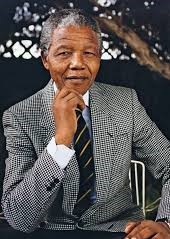

Early life

Nelson Rolihlahla Mandela was born Rolihlahla Mandela ; 18 July 1918 – 5 December 2013) was a South African anti-apartheid activist, politician, and statesman who served as the first president of South Africa from 1994 to 1999. He was the country's first black head of state and the first elected in a fully representative democratic election. His government focused on dismantling the legacy of apartheid by fostering racial reconciliation . Ideologically an African nationalist and socialist, he served as the president of the African National Congress (ANC) party from 1991 to 1997
Political ideology
Mandela served 27 years in prison, split between Robben Island, Pollsmoor Prison and Victor Verster Prison. Amid growing domestic and international pressure and fears of racial civil war, President F. W. de Klerk released him in 1990. Mandela and de Klerk led efforts to negotiate an end to apartheid, which resulted in the 1994 multiracial general election in which Mandela led the ANC to victory and became president. Leading a broad coalition government which promulgated a new constitution, Mandela emphasised reconciliation between the country's racial groups and created the Truth and Reconciliation Commission to investigate past human rights abuses. Economically, his administration retained its predecessor's liberal framework despite his own socialist beliefs, also introducing measures to encourage land reform, combat poverty and expand healthcare services. Internationally, Mandela acted as mediator in the Pan Am Flight 103 bombing trial and served as secretary-general of the Non-Aligned Movement from 1998 to 1999. He declined a second presidential term and was succeeded by his deputy, Thabo Mbeki. Mandela became an elder statesman and focused on combating poverty and HIV/AIDS through the charitable Nelson Mandela Foundation.
Mandela was a controversial figure for much of his life. Although critics on the right denounced him as a communist terrorist and those on the far left deemed him too eager to negotiate and reconcile with apartheid's supporters, he gained international acclaim for his activism. Globally regarded as an icon of democracy and social justice, he received more than 250 honours, including the Nobel Peace Prize. He is held in deep respect within South Africa, where he is often referred to by his Thembu clan name, Madiba, and described as the "Father of the Nation".